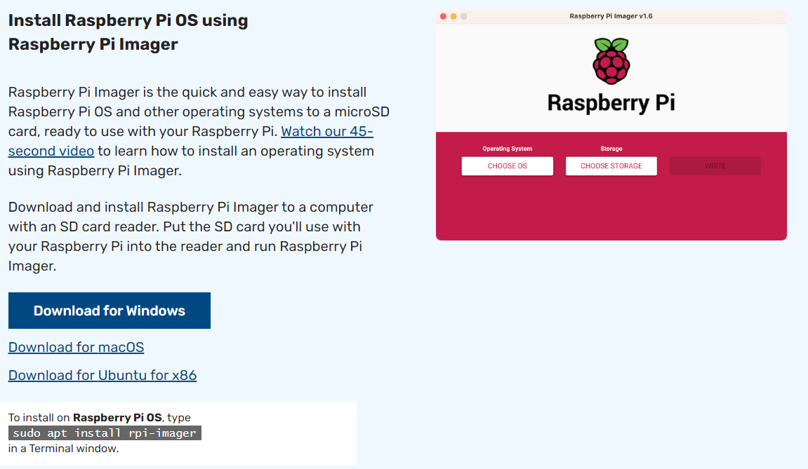
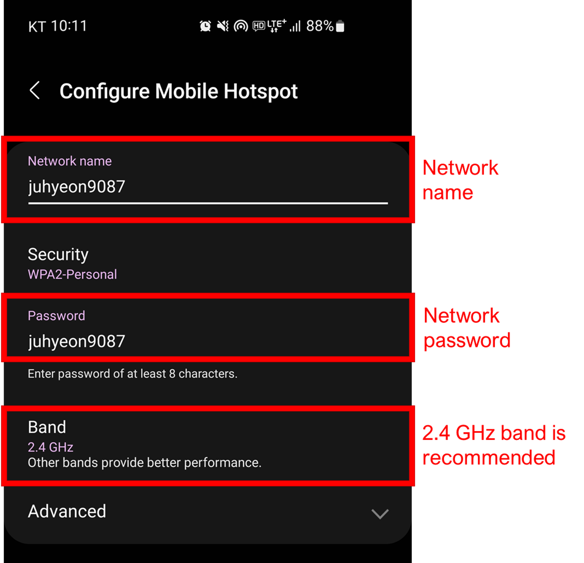
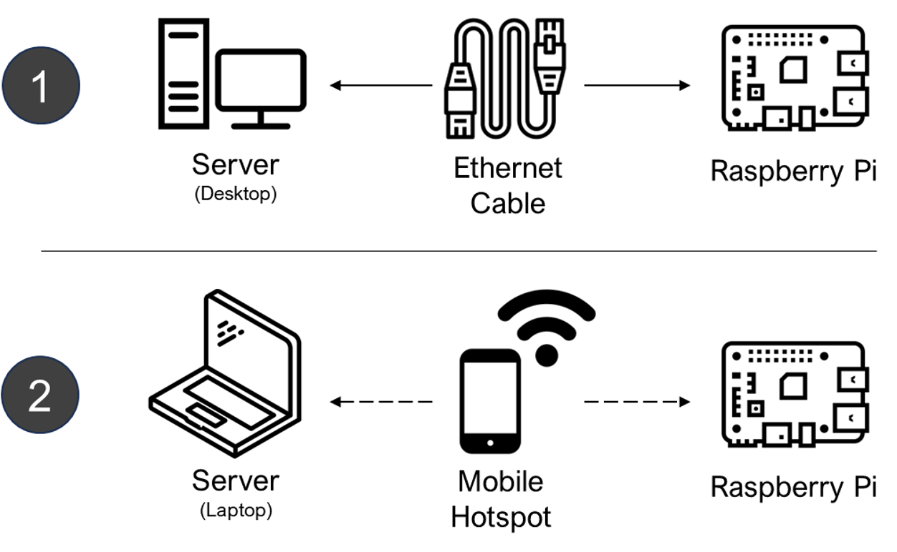
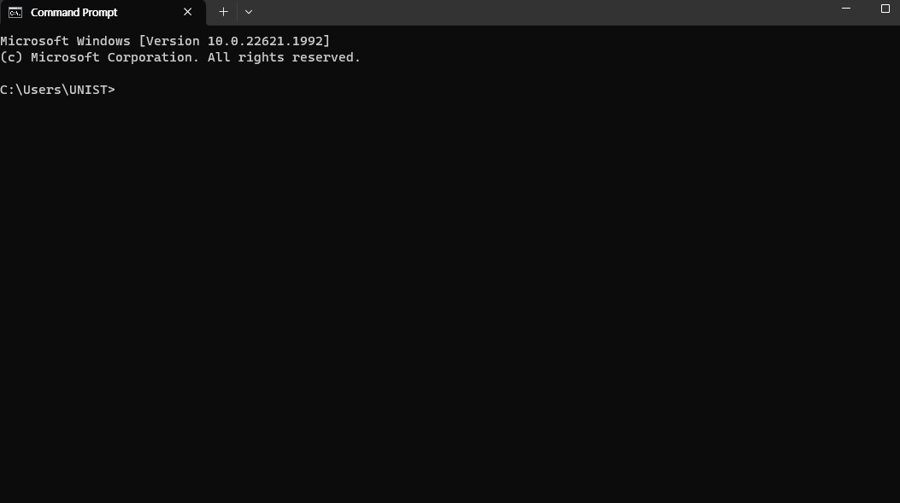
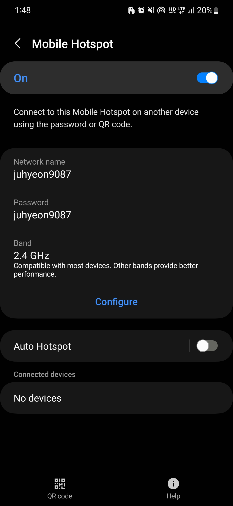
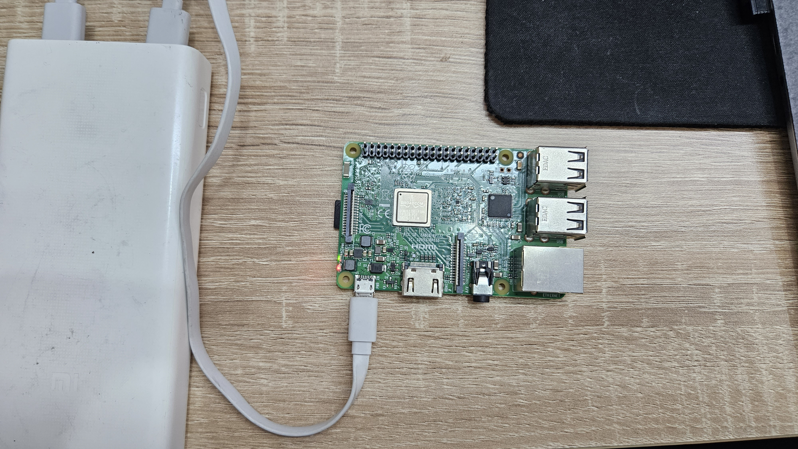
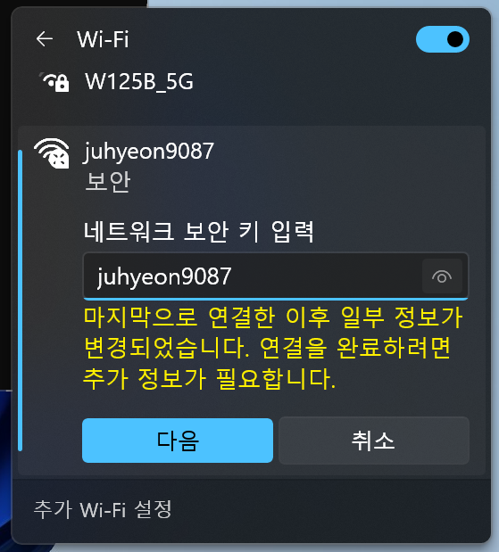
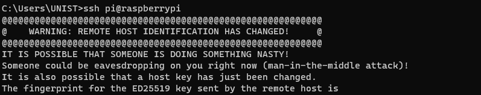

2 Initial Setup
This segment guides you through the complete process of setting up a Raspberry Pi, including the installation of the operating system (2.1), various methods for connecting and accessing your Pi remotely (2.2, 2.3, 2.4, 2.5). Additional troubleshooting and advanced setup tips are also provided in section (2.6).
2.1 Setting Up the Raspberry Pi Operating System
2.1.1 Download the Pi Imager
Begin by downloading the Raspberry Pi Imager, a tool for installing the operating system on your Pi. This software is available on the official Raspberry Pi website. Select the version compatible with your operating system (Windows, macOS, or Ubuntu) and install it on your computer.

2.1.2 Format your SD Card
Insert an SD card into your computer, then launch the Raspberry Pi Imager you just installed. Click CHOOSE OS, then select the Erase option followed by Format SD Card.
2.1.3 Flash the OS onto your SD Card
Once your SD card is formatted, you can proceed to install the Raspberry Pi OS:
- Open Raspberry Pi Imager : Navigate back to the Raspberry Pi Imager main menu.
- Choose the OS : Click
CHOOSE OSand select the Raspberry Pi OS version you wish to install. - Choose the SD Card : Select
CHOOSE SD CARDand pick your SD card from the list. - Enable SSH : This will allow remote access to the Raspberry Pi.
- Set Username and Password : The Raspberry Pi OS’s default username and password are ‘pi’ and ‘raspberry’. For security reasons, it’s advisable to change these once your system is up and running.
- Configure Wireless LAN : This step allows you to connect with WiFi. For this project, you will use your mobile hotspot as a network provider. This will synchronize the Pi’s time at boot by connecting to the network. Please set this up using your mobile hotspot information.
- Write the OS : Finally, click
WRITEto start the writing process. This will flash the selected OS onto your SD card.
Please note that the exact steps for enabling SSH and configuring the WLAN might vary depending on the version of the Raspberry Pi OS and the Imager tool you are using. Refer to the specific documentation if you encounter any issues.
Once the process is complete, your SD card will be ready, and you can insert it into the Raspberry Pi to boot up the new operating system.
The Raspberry Pi lacks a real-time clock, which means it can’t keep track of time when powered off. To fetch the current time when booting up, it needs access to the internet. More details on this can be found here.
To provide the necessary internet connection for time synchronization, we’ll use your mobile phone’s hotspot. By establishing this connection, the Raspberry Pi can easily access the current time, ensuring accurate system operation. Here’s how you can set up your hotspot:

This approach leverages your mobile phone’s data connection, creating a seamless integration between the Raspberry Pi and the internet, which is vital for the project’s success.
2.2 Choose the Access Remotely Way
Choosing the correct method for remote access depends on your specific setup and requirements. Below are the detailed instructions for both methods, allowing smooth access and control of the Raspberry Pi:

2.3 Access Your Pi Using an Ethernet Cable
2.3.1 Connect your Pi to your Laptop
With the Pi-equipped SD card, connect your Pi to your laptop using an Ethernet cable.

2.3.2 Enable Internet Connection Sharing
Navigate to your laptop’s network settings and enable the Internet Connection Sharing option. This will allow your laptop to share its internet connection with the Raspberry Pi via the Ethernet cable, provided it’s connected to the internet.
2.3.3 Access Your Raspberry Pi via SSH
Having installed the Windows Terminal from the Microsoft Store, you can access the Command Prompt by pressing Ctrl + R, typing cmd, and hitting Enter. Alternatively, you can open it by pressing Ctrl + Shift + P. This is what you should see:

To establish an SSH connection with your Raspberry Pi, enter the following command:
ssh pi@raspberrypiIf you encounter any troubles with this section, please refer to the last section of this content, titled Issues of Initial Setup, for guidance and solutions.
2.4 Access Your Pi Using Your Phone as a Network Provider
2.4.1 Set Up Your Mobile Hotspot
Enable your mobile hotspot with the same settings you used when flashing the SD card:

2.4.2 Power Up Your Pi
Insert the prepared SD card into your Pi and plug in the power:

2.4.3 Connect Your Laptop to Your Mobile Hotspot
Configure your laptop’s WiFi to connect to the mobile hotspot:

2.4.4 Verify Connections in Your Mobile Hotspot Interface
After waiting a few seconds, you should see two connected devices in your interface:
1. raspberrypi: The Raspberry Pi - after waiting a few seconds, you should see the Raspberry Pi appear in your mobile hotspot interface.
2. your laptop: Your laptop’s name, as it appears on the network.
2.4.5 Access Your Pi via SSH
First, open the Command Prompt. If you have installed the Windows Terminal from the Microsoft Store, you can access the Command Prompt by pressing Ctrl + R, typing cmd, and hitting Enter. Alternatively, you can open it by pressing Ctrl + Shift + P. You should see the following:
Now, establish an SSH connection with your Raspberry Pi by entering this command:
ssh pi@raspberrypiIf you encounter any troubles with this section, please refer to the last section of this content, titled Issues of Initial Setup, for guidance and solutions.
2.5 Verify Your Pi’s Internet Connectivity
To confirm your Raspberry Pi’s internet connection, use the ping command followed by the IP address of a well-known site. For example, ping Google’s Public DNS Server by typing this command:
ping 8.8.8.8If the Pi is connected to the internet, you will see lines starting with ‘64 bytes from 8.8.8.8’ and a summary of the ping at the end.
You can stop the ping process by pressing Ctrl + C.
If you encounter any troubles with this section, please refer to the last section of this content, titled Issues of Initial Setup, for guidance and solutions.
2.6 Issues of initial setup
2.6.1 Connection and network error
If you encounter any errors accessing your Pi or the internet connectivity, please follow these steps:
- Enable and then disable the network on your laptop or desktop computer
- Check and uncheck the “Enable Internet Connection Sharing” function in your network settings
- Verify the network connection made by your Pi through the Ethernet
2.6.2 Locating Your Raspberry Pi’s IP Address using MAC Address
If you need to access your Pi with a specific IP address, especially when connected to multiple Pis, follow these guidelines:
1. Open Command Prompt: Press the Windows key on your keyboard, type cmd and hit Enter.
2. Execute the arp -a command: This command displays the IP and MAC addresses of devices on your network.
3. Identify your Raspberry Pi: Raspberry Pi devices have MAC addresses that start with B8:27:EB:xx:xx:xx or DC:A6:32:xx:xx:xx. Find the device in the list with a physical address that starts with these characters - that’s your Raspberry Pi’s IP address.
Note: These are the MAC address prefixes specific to Raspberry Pi Foundation devices. Your device’s MAC address may start with a different prefix.
2.6.3 ‘WARNING: REMOTE HOST IDENTIFICATION HAS CHANGED!’
This warning appears when the remote system has different identification than expected, such as after a system re-installation or SSH key change.

You can fix this error by removing the old key for the Raspberry Pi:
ssh-keygen -R raspberrypiAfterwards, try to re-establish the SSH connection.
2.6.4 Using an Enhanced Security Network
If you’re on a network with higher security, you may need to register your Raspberry Pi’s MAC address. See the example below from a university network and consult with your network administrator or IT support for your specific procedures.